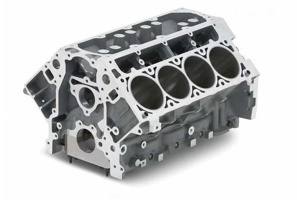
Piston, silindir, biyel kolu gibi motor parçalarının takıldığı motorun orta kısmıdır. Pistonlar, motor bloğundaki silindirlerde aşağı-yukarı yönlü hareket ederler.
Silindir kapağının görevi, silindirlerin üst tarafını kapatarak yanma odalarını oluşturmak ve motorun hareketli parçalarına yataklık etmektir. Motor bloğu ve silindir kapağı arasındaki sızdırmazlık aralarına conta konularak sağlanır.
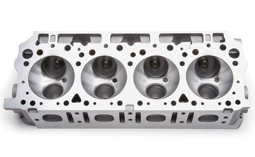
Silindir kapakları yüksek basınç ve sıcaklığa dayanacak şekilde imal edilmektedir. Silindir kapağının üzerinde;
bulunmaktadır.
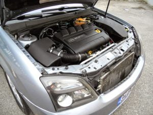
Aracın kaputunu açtığımızda motora baktığımızda gördüğümüz kapaktır. Silindir kapağının üzerindeki sübapları ve külbütörü koruyan genelde sac malzemeden imal edilen ve üzerinde motora yağ doldurmaya yaran deliği de bulunan bir koruyucudur.
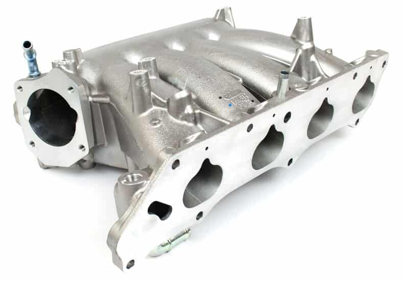
Yanma için gerekli olan havayı silindirlerin içine eşit olarak dağıtan parçadır.
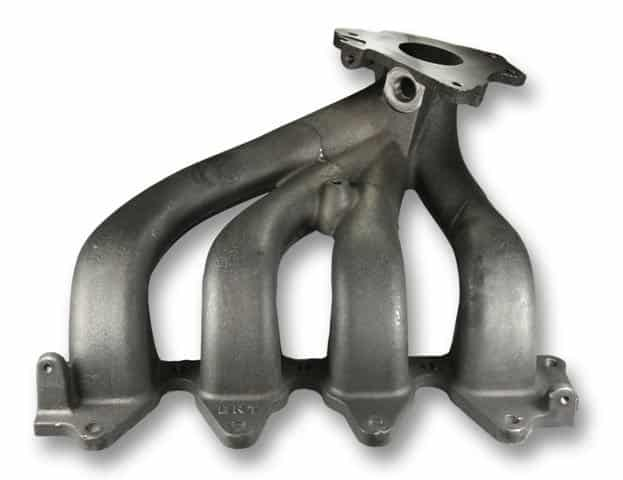
Yanma zamanı sonunda ortaya çıkan gazların motordan uzaklaştırıldığı borudur.
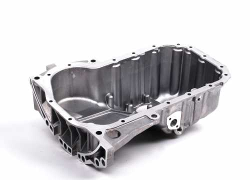
Motorun alt kısmında bulunan yağ tankıdır. Karterde biriken motor yağı, yağ pompası vasıtası ile çekilir ve basınçlı olarak hareketli motor parçaları yağlanır.
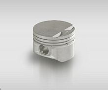
Yanma zamanında oluşan basıncın etkisiyle silindir içerisinde hareket eden parçadır. Üzerinde yağlamayı sağlayan yağ segmanı ve yanma odasının sızdırmazlığını sağlayan kompresyon segmanı bulunur.
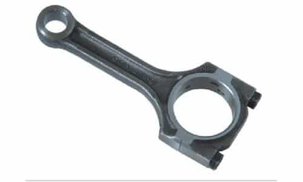
Piston ile krank mili arasındaki bağlantıyı sağlayan parçadır. Pistonun hareketi biyel aracılığı ile krank miline iletilir.
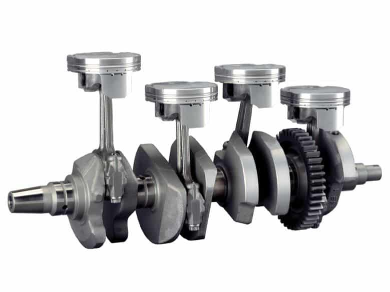
Biyel kolundan gelen doğrusal hareketi dairesel harekete çeviren motor parçasıdır. Krank milinin dairesel hareketi volan dişlisine ve oradan da aktarma organlarına aktarılır.
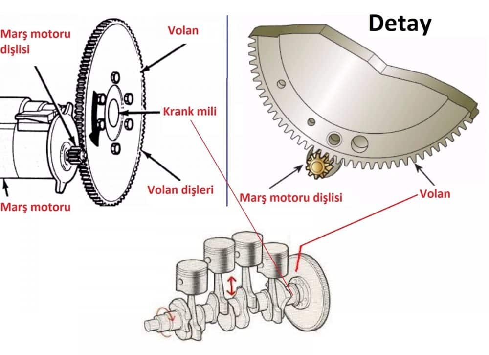
Krank milinden gelen dönme hareketini kavrama ve vites kutusuna ileten parçadır.
Hareketini krank milinden alan ve zamanlama işlemi gören bir parçadır. Emme subabının ve egzoz subabının açılacağı zamanı belirler. Krank mili ile arasındaki bağlantı triger kayışı vasıtasıyla yapılır.
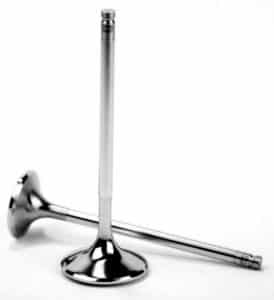
Silindir kapağında bulunan bu parça, emme manifoldundan gelen havayı uygun zamanlarda açılarak yanma odasına gönderir.
Yanma zamanı sonunda ortaya çıkan gazları uygun zamanda açılarak egzoz manifolduna gönderen parçadır.